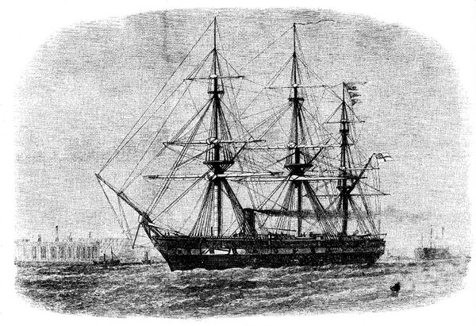
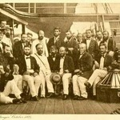
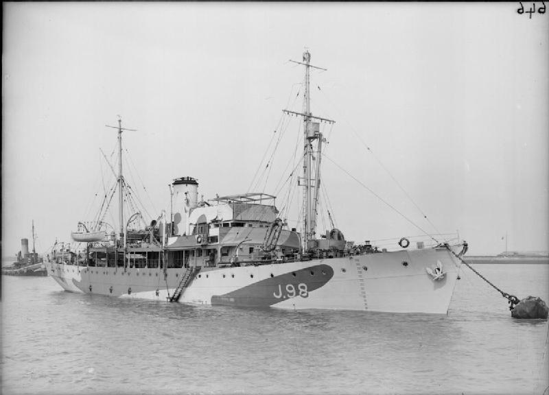
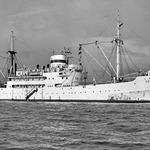
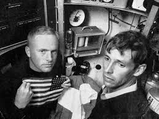
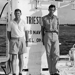
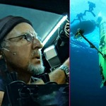
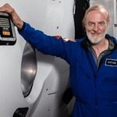
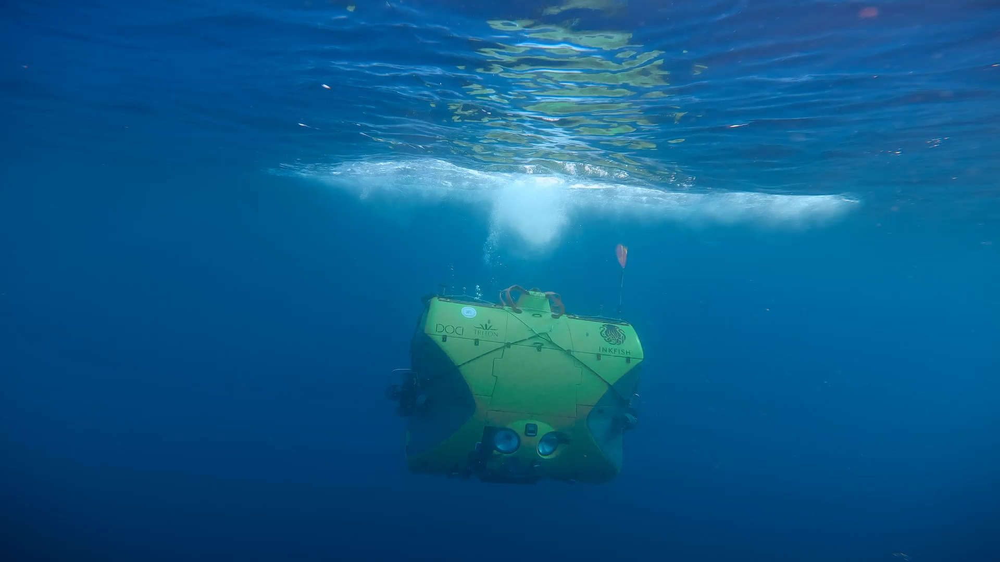

Экипаж британского корвета «Челленджер».
23 марта 1875 года во время обычных измерений глубины с помощью утяжелённой верёвки было установлено, что она достигает дна на глубине около 8184 метров. Это стало первым зафиксированным измерением глубины Марианского жёлоба

Экспедиция «Челленджера» — научная экспедиция на парусно-паровом корвете «Челленджер», длилась с 1872 по 1876 годы и принесла множество открытий, послуживших основой океанографии.

Идея экспедиции принадлежала шотландскому биологу Эдинбургского университета Чарльзу Уайвиллу Томсону. Королевский военно-морской флот предоставил Королевскому научному обществу судно «Челленджер», которое было переоборудовано в 1872 году для научных целей: судно оснастили биологическими и химическими лабораториями, лебёдками, средствами для измерения глубин, взятия проб грунта и воды, определения температуры воды.
Британская экспедиция 1951 года.
Новое гидрографическое судно «Челленджер II» (унаследовало название первоначального корвета) с помощью эхолота зафиксировало максимальную глубину 10 863 метра. Тогда же глубочайшая точка впадины получила название «Бездна Челленджера»

Советская экспедиция на судне «Витязь»(1957 год)
Группа учёных под руководством Алексея Добровольского провела измерения, которые показали максимальную глубину 11022 метра. Этот результат долгое время считался рекордным.

Жак Пиккар и Дон Уолш.
23 января 1960 года на батискафе «Триест» они стали первыми людьми, достигшими дна Марианской впадины. По данным приборов, аппарат погрузился на 10 916 метров. Батискаф был создан швейцарским инженером Огюстом Пиккаром при участии его сына Жака.


Джеймс Кэмерон.
В 2012 году на батискафе Deepsea Challenger он стал первым человеком, побывавшим в Бездне Челленджера после погружения 1960 года.

Виктор Весково.
Инвестор, морской исследователь и офицер ВМС США в отставке. Весково установил мировой рекорд, совершив одиночное погружение на глубину 10 928 метров в Марианской впадине (Challenger Deep) 28 апреля 2019 года.

Он наиболее известен как организатор и участник экспедиции Five Deeps Expedition, целью которой было погружение в самые глубокие точки каждого из пяти океанов Земли.
Для этих экстремальных погружений использовался специально построенный глубоководный аппарат (батискаф) Limiting Factor, способный выдерживать огромное давление на дне океана. Во время своих погружений Весково обнаружил новые виды морских существ, а также, к сожалению, пластиковый мусор, что привлекло внимание к проблеме загрязнения океанов.

наверх